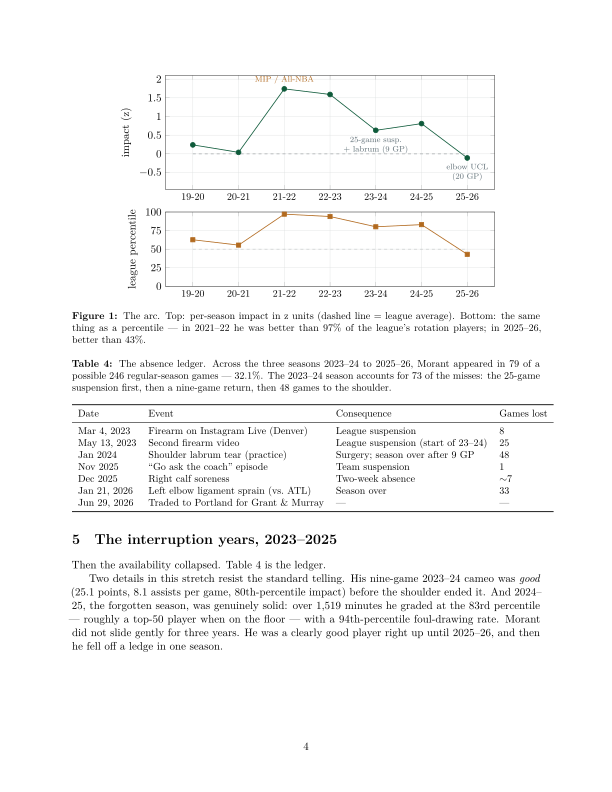

Research Note №1 · A career autopsy · rev. v2
The Rise and Fall of Ja Morant
A statistical account, 2017–2026.
Abstract.
We measure every season of Ja Morant's career — college, rise, peak, and collapse — with one rating
system applied the same way to every player in every season. Three findings organize the paper.
The rise was real: from an average-ish rookie to the 97th percentile of the league in 2021–22.
The collapse was about missing, not choosing: measured across shot zones, 88% of his 2025–26
efficiency crash came from worse conversion and only 12% from where he shot — while his playmaking hit
a career high. Much of the "decline" is too small a sample to judge: the three-point collapse
covers just 85 attempts — too few to distinguish genuine decline from ordinary variance — and his
free-throw shooting, the purest touch test, actually improved, significantly. The fall of Ja
Morant is, by the numbers, mostly an availability story: 79 games played in three seasons. His
rank of #140 of 644 prices that risk, and the number is robust to the model's own judgment calls —
every variation tested lands him between #112 and #147. It probably underprices the talent, and the
paper shows exactly where the difference lives.
Principal findings
- Missing, not choosing: of his effective-field-goal collapse, 88% was shot-making and only 0.7 points shot-selection (an exact zone-level Shapley split — with its scope stated honestly: zone data cannot see shot difficulty within zones).
- The sample-size problem: the three-point collapse is 20-of-85; its 95% interval [.158, .336] contains his career norm. The one split that moved beyond doubt was his free throw — upward, to .897.
- The absence ledger: 79 of a possible 246 games across three seasons (32.1%) — the 2023–24 season alone: a 25-game suspension, a nine-game return, then 48 games lost to the shoulder.
- The stress test: seven model variations (overrides off, equal season weights, different anchors, reliability stack deleted) land him #112–#147. #140 is not an artifact of any single judgment call.

In plain terms: #140 is a defensible price for the delivery risk. It is
probably the wrong forecast of the talent. Both statements are the same mathematics, read in two
directions.
Cite this note
Freedman, F. (2026). "The Rise and Fall of Ja Morant: A Statistical
Account, 2017-2026." The Gravity Report, GRAVITY Research Note No. 1, v2.
https://thegravityreport.com/notes/morant/
@techreport{gravity2026morant,
author = {Freedman, Francesco},
title = {The Rise and Fall of Ja Morant: A Statistical Account, 2017--2026},
institution = {The Gravity Report},
type = {GRAVITY Research Note},
number = {1},
year = {2026},
month = {7},
note = {v2, revised July 11, 2026},
url = {https://thegravityreport.com/notes/morant/}
}
Revision note (v2, July 11, 2026), following external review: the absence
ledger was corrected (the January 2024 shoulder injury cost 48 games, not 73 — the other 25 were the
suspension, listed on its own row; denominator 246, not 249); the Wilson-interval, free-throw, and
Shapley-split language was tightened to what the evidence supports; the bundled forward scenarios were
replaced by an availability × impact matrix; and a model-sensitivity appendix was added. The errors were
ours. Nothing in the correction changes the ranking itself.